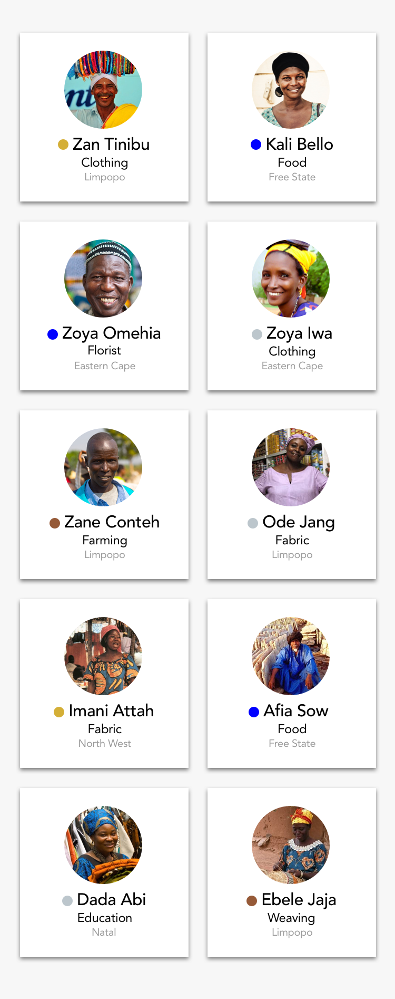

<!--
  Generated template for the MerchantPage page.

  See http://ionicframework.com/docs/components/#navigation for more info on
  Ionic pages and navigation.
-->
<ion-header>
  <ion-navbar>
    <button ion-button menuToggle>
      <ion-icon id="icon" name="menu"></ion-icon>
    </button>
    <ion-title class="title" >
      <p style='color: white'>MERCHANTS</p>
    </ion-title>
    <ion-buttons end>
        <button style="color:white;" ion-button icon-only (click)="openModal()">
            <ion-icon color="white" name="add"></ion-icon>
        </button>
    </ion-buttons>
  </ion-navbar>
</ion-header>

<ion-content>
    <div (tap)="nextScreen()">
      
    </div>
</ion-content>
